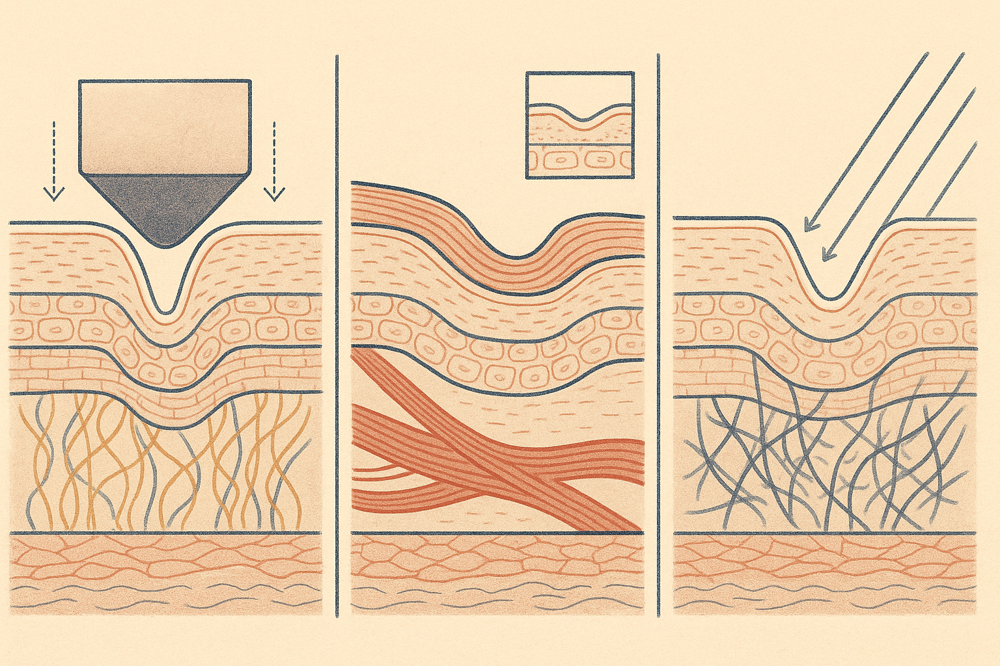
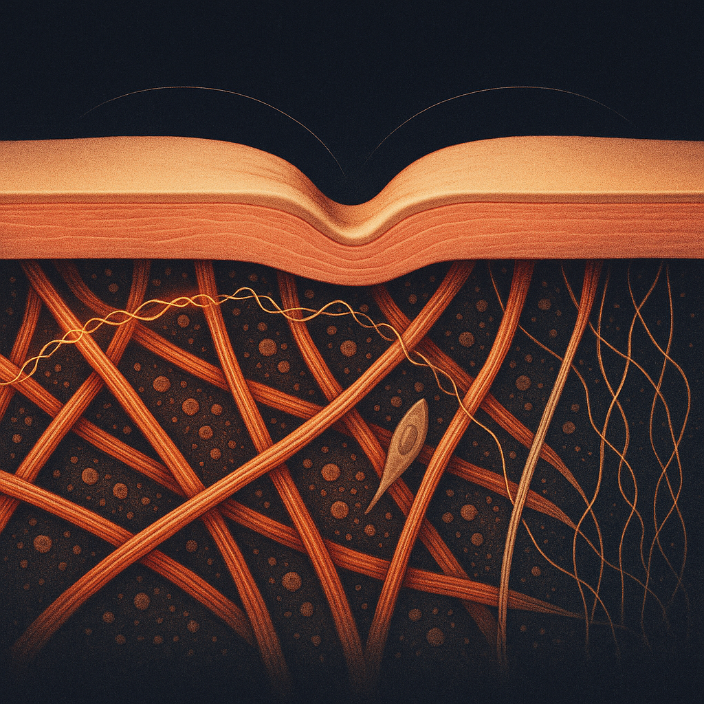
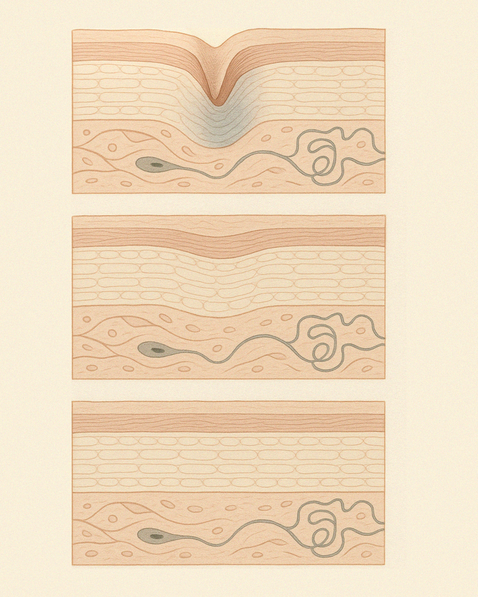

Review below. Reply approve to publish the Facebook post, or tell me edits.

Seven in the morning, mirror light, and there it is: a vertical crease running down one cheek that was not there when you went to bed. Not a smile line. Not in a direction your face even folds when it moves. Just a pressed-in groove, like a seam. And underneath the mild annoyance, a quieter question. Is that permanent now?
Probably not. But the honest answer takes a little longer than "no", and it is worth having, because it changes what you do about it.
One thing up front, before we get anywhere near our own product. We sell an LED mask, and it does nothing at all for a pillow crease. Light cannot un-press eight hours of mechanical folding, and any brand suggesting otherwise is guessing. Almost everything useful in this article is free.
Most skincare talk treats "wrinkles" as one thing with one fix. They are not.
Dynamic lines only appear when your face moves. Smile, squint, frown, and they arrive; relax, and they go. They are the fold marks of repeated muscle movement, and in younger skin they vanish completely at rest.
Static lines, sometimes called etched lines, are visible when your face is doing nothing at all. They are the long product of years of sun exposure layered on top of the gradual decline in collagen and elastin that comes with age. They look the same at 7am and at 7pm.
Compression lines, or sleep lines, are pressed in from outside. Eight hours with your cheek loaded against a pillow will fold skin along whatever axis the pressure dictates, which is why these lines often run in directions no expression can explain: odd diagonals across the cheek, a vertical band near the jaw, a small fan at the outer corner of the eye. They cluster on the side you sleep on, and they are at their worst first thing in the morning.
Three lines, three causes. Which means one product, any product, claiming to fix "wrinkles" as a category is already being vague with you.
Here is the useful part, and it costs nothing. It works regardless of what is on your bathroom shelf, ours included.
Within ten minutes of getting up, look at your face in even window light (not the downlight above the mirror, which exaggerates everything). Note which lines are present and where. Then look again around mid-morning, same light if you can manage it.
> The morning test > 1. A line that visibly eases between waking and mid-morning is a compression line, pressed in overnight, not etched in. > 2. A line that only appears when you smile, squint or frown is dynamic. > 3. A line present at rest, morning and evening, unchanged, is static.
One more tell: check for asymmetry. Compression lines favour one side, the side you sleep on. Static lines from sun and time tend to be more even-handed.
Do this for three or four mornings and you will have a genuinely accurate map of what is going on with your face, which is more than most product marketing will ever give you.
So why does the same crease disappear by 9am at 25 and linger past morning tea at 50?
Skin's snap-back comes largely from elastin, a coiled protein sitting in the dermis that behaves like a spring: stretch or fold the skin, and elastin pulls it back to shape. Water content and the density of the dermis itself do the rest, giving skin the plumpness that resists being creased in the first place.
Two things change with age. Elastin fibres, loaded and released thousands of times over decades, gradually fatigue and fragment, so the spring gets slower and weaker. And dermal density declines steadily through adulthood, so the same eight hours of pillow pressure folds the skin more deeply to begin with.
Think of a track worn across a lawn. One person crossing the grass leaves nothing; it stands back up within the hour. The same crossing, every night, for years, and eventually there is a path. Nothing dramatic happened on any single night. The lawn just recovered a little less each time. That is roughly how a habitual sleep crease can, over enough years, settle into a permanent one.
An honest hierarchy, cheapest first.
Reduce the nightly load. Back sleeping is the only intervention that removes the cause rather than softening it. It is also genuinely hard to sustain, and most people who try it drift back onto their side by 2am. That is fine. Even reducing the hours spent on your favoured side helps, because the load is cumulative. Aim for less, not perfect.
Stop dragging your skin while you are awake. Cleansing pull, a brisk towel rub, heavy-handed cream application: these are real mechanical loads applied daily. Pat and lift rather than drag. It is free and it compounds.
Silk pillowcases, graded honestly. Lower friction is plausible and they are comfortable, but prevention of compression creasing is not established, and no pillowcase removes the load itself. Your cheek still carries the weight of your head. Buy one because it feels nice, not because it is a treatment.
Daily SPF. This addresses the static-line column, not the compression one, and it will do more for your skin's longevity than anything we sell. We mean that plainly.
On sleep lines specifically, no. We said it at the top and it is worth repeating here, in the section where you would most expect a sales pitch. LED light therapy has no way to reach a mechanical cause. Your cheek is still going to carry the weight of your head for eight hours, and nothing you shine on it in the morning changes that.
What consistent, gentle red light is associated with sits in the other columns entirely: the look of tone, texture and fine lines over weeks of daily use. Gentle daily red light use is associated with visible glow and improved-looking tone somewhere around the 7 to 10 day mark, and with fine lines looking softened in the 4 to 8 week range. Gradual, supportive, cosmetic.
Redermis is a personal-care device, not a medical device. We make no claim to diagnose, treat, cure, or prevent any condition. A sleep crease at 7am is not what it is for.
Redermis is new. We are still earning our reviews. We are not going to invent any while we wait.
If you want a closer look at the mask, it is here:
Redermis Light Therapy Mask, face and neck
In the meantime, run the morning test. It is free, it takes two glances, and it will tell you more about your own face than we can.

Some of the lines on your face were not made by smiling. They were made by your pillow.
That 7am crease down one cheek, on the side you sleep on, running in a direction no smile could make.
In your 20s it was gone within the hour. The crease is not new. The release is what slows. Your elastin works like a coiled spring, and after decades of the same nightly load it takes its time letting go. A path worn across a lawn.
Free test. Look in window light within ten minutes of waking, then look again mid-morning:
1. Eases by mid-morning = pressure line, pressed in overnight.
2. Only shows when you smile or squint = expression line.
3. There all day, unchanged = etched line.
Three causes, three different answers, which is why money so often goes to the wrong fix. Worth saving so you have it in front of you tomorrow morning.
Silk pillowcases lower friction, which is pleasant, but no pillowcase removes eight hours of load. Only back sleeping does that.
The honest bit: we sell a light therapy mask, and it does nothing for this. Light cannot un-press a pillow. What red light is associated with is glow and tone around 7 to 10 days, and softer-looking fine lines at 4 to 8 weeks. Cosmetic device, not medicine. We are a new brand, no wall of reviews yet, and none invented.
Mask details are on our site if you ever want them: https://redermis.com.au/products/red-light-therapy-face-neck-mask
Which side do you sleep on, and is that the side with the line?
#SkinLongevity #SleepLines #RedLightTherapy #SkincareFacts
IMAGE PROMPT: Editorial conceptual science illustration in the style of Scientific American or New Scientist, square 1:1, deep indigo-charcoal ground with warm amber, coral and soft gold accents, fine editorial linework with subtle grain, chiaroscuro, generous dark negative space, single iconic motif. A macro cross-section band of dermis crossing the frame: at the top a smooth skin surface with ONE soft crease pressed into it from above by a broad implied load. Directly beneath the crease, accurate dermal architecture: coral collagen bundles woven in an ordered lattice with fine gold elastic fibres drawn as slender helical filaments threaded between them, and one spindle fibroblast. Read the fibres left to right as a fatigue sequence: tightly wound, springy and evenly spaced at left, then progressively stretched, thinned and finally fragmented and slack at right, with the surface crease above correspondingly springing back fully at left and still lingering at right. Two thin diagrammatic recoil arcs and faint hairline depth guides. The fibres must read as fine biological filaments, NOT as rope, twine, cord, wire, spring toys or any craft object, and must not be macroscopic detached objects floating in space. No text, no words, no numbers, no logos, no people, no faces, no product, no mask, no device.

If it fades by 10am, it is not etched yet. It is a pressure mark.
That crease down one cheek when you wake up? Eight hours of pillow load, pressed into skin like a fold in linen.
Tomorrow morning, run this test on any line you are worried about:
Only shows when you move = expression line.
Eases through the morning = pressure line.
There all day, unchanged = etched line.
Comment PRESSURE, EXPRESSION or ETCHED, which one is yours?
Here is the part nobody explains. With age the crease gets deeper and the release gets slower. Elastin fatigues with repeated loading, dermal density declines, and the snap-back that took young skin an hour starts taking all day.
The free fix:
Spend less of the night loaded on one side.
And stop dragging. Cleansing pulls and towel rubs are mechanical load too. Pat, do not drag.
Honest limit: light therapy does nothing about eight hours of folding. Cosmetic device, not medicine.
And we are a young brand still collecting our first reviews, so we will not pretend to have a wall of them.
What gentle daily red light is associated with is the other column entirely: the look of tone and fine lines over weeks of consistent use.
Save this, then run the test tomorrow morning. Link in bio if you want a closer look at the mask.
#skinlongevity #finelines #sleeplines #skincareaustralia #skincarescience #ausskincare #healthyageing #ledfacemask #perimenopauseskin
IMAGE PROMPT: Elegant editorial science illustration in the style of Scientific American or Quanta magazine, vertical 4:5 composition. A clean cross-section diagram of layered skin strata rendered as soft sculptural bands in warm cream, terracotta and deep teal, shown in three stacked panels reading as a morning timeline. Top panel: a sharp V-shaped fold pressed deep into the upper layers, with fine coiled spring-like elastin fibres beneath it drawn compressed. Middle panel: the same fold half released, the coils partially re-extended, subtle motion arcs suggesting slow recoil. Bottom panel: the surface smooth again, coils relaxed and evenly spaced. Structured, legible, minimal grid layout on a warm off-white background, even margins around three complete panels, muted sophisticated palette, flat illustration with subtle grain texture. No text, no labels, no numbers, no people, no faces, no products, no devices.
**Title:** Sleep Lines vs Expression Lines vs Sun Damage: The Free Morning Test
**Description:** Not every line is a wrinkle. One that fades by mid-morning is a pressure line from your pillow.
Light cannot unfold mechanical creasing: only back sleeping removes the load, and a silk pillowcase mostly just feels nice. Red light therapy is associated with the look of tone and fine lines over weeks.
Free test: fades by mid-morning = pressure. Only when you smile = expression. There all day = sun. New brand, still earning our reviews. Pin this for tomorrow.
**Link:** https://redermis.com.au/products/red-light-therapy-face-neck-mask
**Hashtags:** #FineLines #SleepLines #RedLightTherapy #SkincareOver40 #SkincareTips
Note: this pin reuses the Instagram image (corrected 4:5 crop, three complete panels).